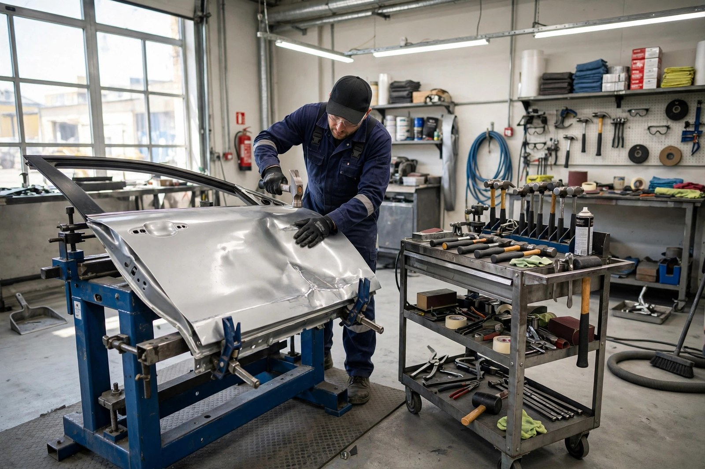
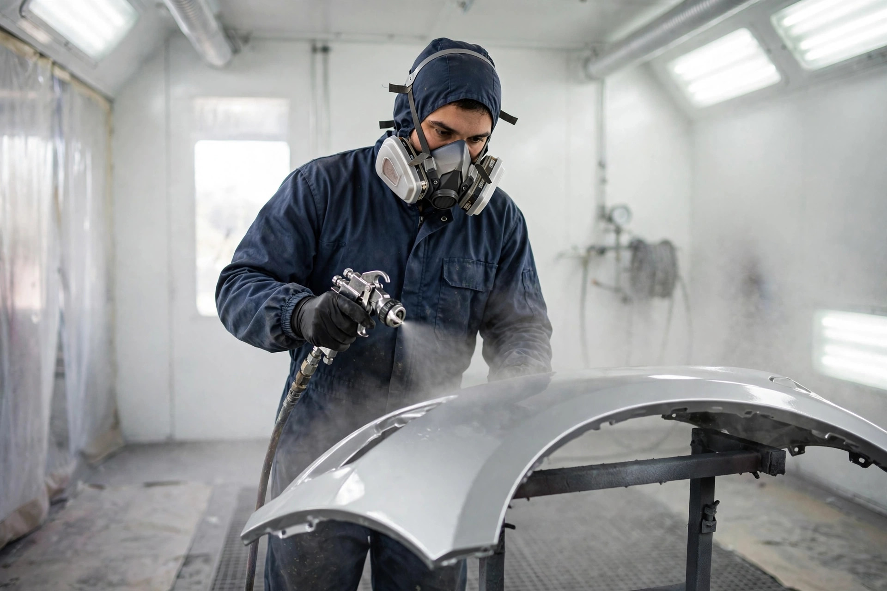
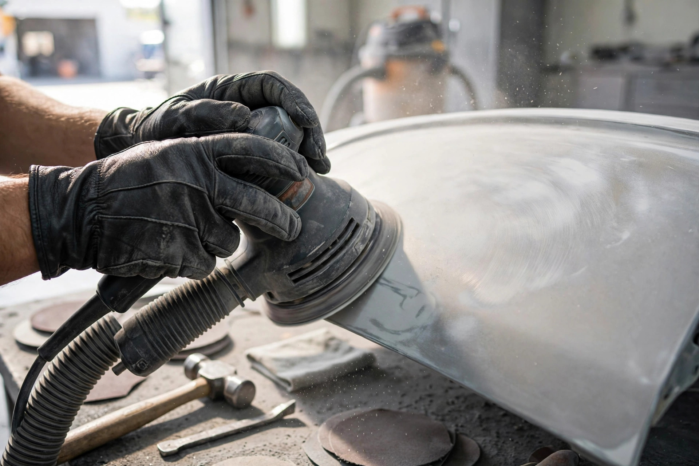
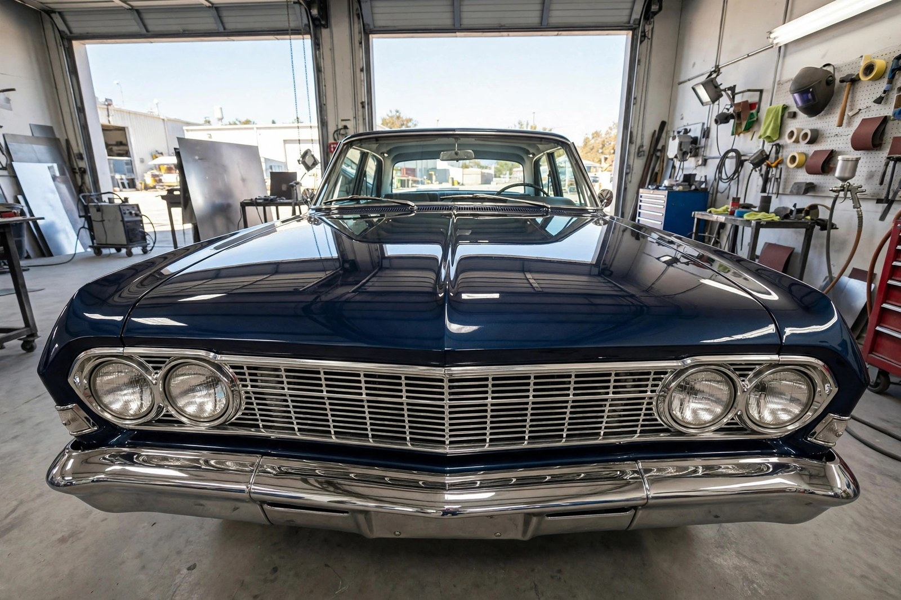

Smash repairs
From small dents to major collision damage — we restore vehicles to their pre-accident condition and protect resale value.

Berowra, NSW · Panel beater & smash repair specialist
Berowra Prestige & Restoration — smash repairs, panel beating and spray painting done right. Rated 5.0 out of 5 from 18 Birdeye reviews.
What we do
From small dents to major collision damage — we restore vehicles to their pre-accident condition and protect resale value.
Skilled panel work — straightening, reshaping and replacing panels so the damage disappears completely.
Colour-matched spray painting for a flawless factory finish — from single panels to full repaints.
We supply and fit windscreens — chipped or cracked glass replaced to factory standard.
Genuine and quality parts for cars, bikes and boats — sourced fast so repairs aren't held up.
Body trimming and detailing work — the finishing touches that make the restoration complete.

Why choose us
We hold ourselves to the highest standard in car repairs — outstanding quality with minimum disruption to your day. You get your vehicle back looking like the accident never happened.
The workshop in action


Word on the street
Good to know
No — call us on (02) 9456 2346 or email bprsmashrepairs@gmail.com with photos of the damage, and we'll give you a clear quote before any work begins.
Yes — we handle smash repairs, parts supply and restoration for cars, motorcycles and boats, old and new.
Yes. Our spray painting is colour-matched to your factory finish, so repaired panels blend in seamlessly.
Call (02) 9456 2346 or email bprsmashrepairs@gmail.com — describe the damage and we'll take it from there.
Come see us